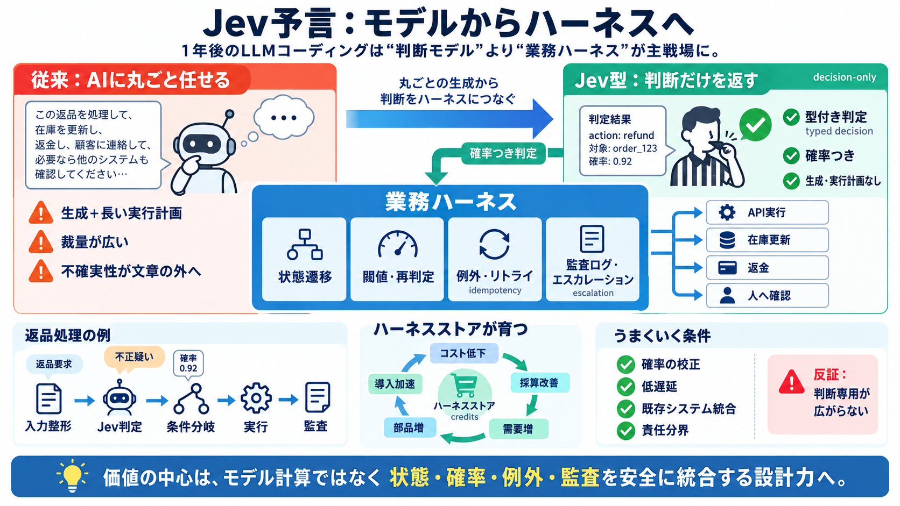

Cover
02 / 12
Jevで形が変わる
予言
1年後のLLMコーディングは「モデル」より「業務ハーネス（実行・制御・監査）」中心へ移る――という見立てです。
主役は“判断”だけの専用モデル（Jev）→ 実行は外側のソフトウェアが担う。
その結果、価値はモデル計算よりも、状態遷移・閾値・例外・リトライを統合する設計能力に寄る。
Problem
03 / 12
丸ごと任せる危うさ
暴走領域
従来の「文章生成＋長い実行計画」中心の設計では、AIに裁量を渡しすぎる場面が残りやすいです。
課題
実行の不確実性が“文章の外”へ出る
境界
を設計しないと制御が難しい
狙い
AIの役割を縮め、判断だけを返す
probabilistic decision
を外部が扱う
Metaphor
04 / 12
AIは“審判”へ
分類→判定
Jevは生成や実行計画はしません。返品要求や不正利用の疑いなどを、型付き・確率付きで「判断」します。
Jev（モデル）
入力 → 型付き判定（確率つき）
English:
decision-only
（判断専用）
ハーネス（外側）
判定 → 状態遷移／API実行／監査
JP:
運用制御
（リトライ・エスカレーション含む）
分離の効果
“裁量”を減らし、安全な接続へ
확률（確率）を境界にする
設計の中心
閾値・冪等性・例外処理の統合
English:
idempotency
（冪等）
Architecture
05 / 12
返品処理の分解
ハーネス中心
返品の例では、検索・期限確認・在庫更新・返金API・監査ログなどをハーネスが担い、Jevは判断だけを返します。
入力
購入履歴・状況・申請文など（非構造化）
JP:
入力整形
が入口
Jevの出力
返品要求 / 不正疑い…を型＋確率で判定
English:
typed decision
（型付き判定）
実行
状態遷移・在庫更新・返金API呼び出し
JP:
条件分岐
で分岐する
安全
リトライ・エスカレーション・監査ログ
JP:
監査可能性
を残す
Comparison
06 / 12
従来のAIと違う
役割の最小化
「生成・実行計画を全部やるAI」ではなく、「判断（確率つきの分類・判定）」に限定することで、制御と安全性を設計しやすくします。
従来（主流）
文章生成＋長い手順を“出力”しがち
リスク：裁量の範囲が広くなりやすい
Jev型
生成なし／計画なし → 判断だけ返す
境界：確率が意思決定の入口になる
設計の焦点
閾値・再判定・例外と監査を“ハーネス”へ
English:
escalation
（人へのエスカレーション）
成果
実行の不確実性を外部で扱える
“AIの出力”ではなく“運用”が主戦場
Distinction
07 / 12
大手が来ると名前が消える
Jevは概念化
OpenAI/Anthropic/Googleのような大手が同種のDecision Modelを出すと、「Jevを使う」より「decision modelを投げる」が一般語になり得る、という見立てです。
予測
製品名（Jev）は一般化して薄れる
カテゴリ名が残る
残る価値
ハーネスの部品資産・統合設計
モデルより“接続”が効く
「モデル名の競争」から「安全に統合できる設計思想」の競争へ。
Process
08 / 12
中間部品が増える
ハーネスストア
汎用層（確信度振り分け・監査・リトライ）は吸収されやすく、固有層は流通しにくい。そこで中間層がPlugin/Skillとして部品化される、という構図です。
汎用層
確信度分岐・監査・リトライ等
組み込みに取り込まれやすい
固有層
社内独自の業務知識
共有されにくい
中間層
返品処理・経費精算・契約審査
部品（Plugin/Skill）になりやすい
結果
“ハーネスストア”が育つ
再利用が加速する
Evidence
09 / 12
自己強化ループ
需要→供給
判断専用化で実行（クレジット／計算コスト）が下がると、自動化が採算に乗り、需要が増えて部品開発も加速する――という循環が描かれます。
1
コスト低下（文字を逐次生成しない等）
English:
credits
（計算コスト）
2
採算改善 → 自動化の導入が進む
大量処理・低遅延で効果が出やすい
3
需要増 → ハーネス部品が増殖
組み合わせで開発が速くなる
4
供給増 → さらに導入が進む
自己強化ループ（供給・需要の連動）
Distinction
10 / 12
うまくいく条件
反証も必要
1年後の市場変化は前提次第です。実運用の遅延・確率の校正・運用コスト（ハーネス保守）・責任分界の整備が満たされる必要があります。
前提
判定の確率が運用で信頼できる
校正・ドメイン適合
運用
監査可能性・エスカレーションが成立する
ハーネスの設計負担が増える
摩擦
既存システム統合でボトルネックが出る可能性
責任所在の整備が必要
反証
当該の“判断専用”が広がらない／組み込みが進まない
ストア成立までの時間
Closing
11 / 12
結論
移行の焦点
モデルが賢くなるほど「全部任せる」から離れ、判断と実行を分離する。価値の中心は“ハーネス設計”へ移る――それがこの予言の骨格です。
次に差がつくのは、生成の上手さではなく、状態・確率・例外・監査を安全に統合する設計力。
Bilingual note（用語）
ハーネス（harness）＝実行・制御・監査の外側ソフトウェア / Jev＝判断専用モデル（decision-only）。
REFERENCES
12 / 12
References
No references found